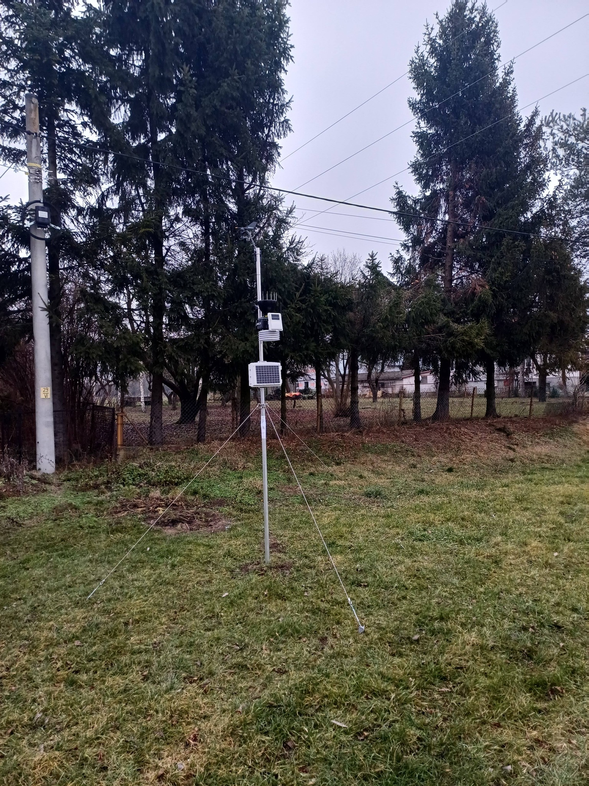
Stacja pogodowa i urządzenia do pomiaru gleby
Stacja pogodowa i urządzenia do pomiaru gleby i wilgotności materiałów sypkich. Sfinansowana przez...
Czytaj więcej →
Stowarzyszenie Producentów Fasoli Tycznej – Tradycja, Smak i Najwyższa Jakość.
Poznaj naszą historięStowarzyszenie Producentów Fasoli Tycznej „Piękny Jaś” z siedzibą we Wrzawach dba o zachowanie unikalnego charakteru uprawy naszej regionalnej dumy.
Naszą misją jest wspieranie lokalnych rolników, promocja zdrowej żywności oraz dbanie o to, aby na stoły trafiała fasola wyłącznie najwyższej kategorii, uprawiana zgodnie z tradycyjnymi metodami.
Dane stowarzyszenia
Postanowieniem Sądu Rejonowego w Rzeszowie, XII wydział gospodarczy Krajowego Rejestru Sądowego z dnia 10.07.2007r. wpisano Stowarzyszenie Producentów Fasoli Tycznej „PIĘKNY JAŚ” we Wrzawach do KRS podnumerem 284532
Numer Identyfikacji Podatkowej 8672153990 REGON 180250102
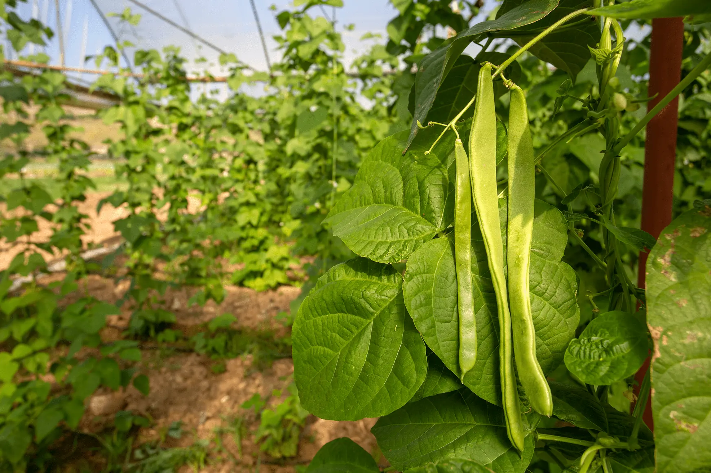

Stacja pogodowa i urządzenia do pomiaru gleby i wilgotności materiałów sypkich. Sfinansowana przez...
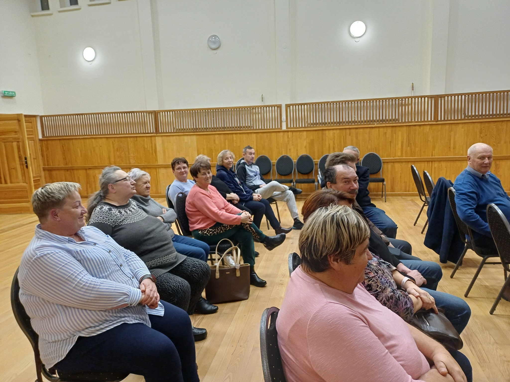
W dniach 19.11.2025 – 23.11.2025 – 26.11.2025 – 27.11.2025 w budynku Domu Kultury we Wrzawach...
Przewodniczący
Wiceprzewodniczący
Skarbnik
Członek zarządu
Sekretarz
Pełna treść dokumentu regulującego działalność Stowarzyszenia Producentów Fasoli we Wrzawach.
Stowarzyszenia Producentów Fasoli we Wrzawach
§1
Stowarzyszenie nosi nazwę Stowarzyszenie Producentów Fasoli Tycznej "Piękny Jaś" we Wrzawach zwane w dalszej treści Stowarzyszeniem, które jest niezależną, samorządną, społeczną organizacją rolników o celach nie zarobkowych zajmujących się produkcją fasoli.
§2
Siedzibą Stowarzyszenia jest miejscowość Wrzawy i zrzesza ono producentów fasoli z gmin Górzyce, Zaleszany i Radomyśl nad Sanem a terenem działania Stowarzyszenia jest obszar całego kraju oraz zagranica.
§3
1. Stowarzyszenie działa na podstawie niniejszego statutu.
2. Stowarzyszenie posiada osobowość prawną.
3. Podstawą działania Stowarzyszenia jest ustawa z dnia 7 kwietnia 1989 roku Prawo o Stowarzyszeniach (Dz. U z 2001 r Nr79, poz. 855 ze zmianami).
§4
Stowarzyszenie może być członkiem innych organizacji o podobnym celu działania.
§5
1. Czas działania Stowarzyszenia jest nieograniczony.
2. Działalność Stowarzyszenia opiera się na pracy społecznej członków. Do prowadzenia swych spraw może ono zatrudnić pracowników.
§6
Podstawowym celem Stowarzyszenia jest działanie na rzecz dostosowania produkcji fasoli do warunków rynkowych, poprawy efektywności gospodarowania, planowania produkcji z uwzględnieniem jej ilości i jakości, koncentracji podaży oraz organizowania sprzedaży a także ochrony środowiska naturalnego.
§7
Cel wymieniony w § 6 Stowarzyszenie realizuje poprzez:
§8
1. Członkowie Stowarzyszenia dzielą się na zwyczajnych i wspierających.
2. Członkami zwyczajnymi Stowarzyszenia mogą być osoby pełnoletnie - obywatele polscy mający stałe miejsce zamieszkania na terenie działania Stowarzyszenia, które posiadają gospodarstwo rolne lub prowadzą działalność rolniczą w zakresie działów specjalnych produkcji rolnej, popierają cele Stowarzyszenia oraz deklarują i dają rękojmię czynnego uczestnictwa w realizacji tych celów.
3. Przyjęcia na członka stowarzyszenia dokonuje zarząd po wypełnieniu i podpisaniu deklaracji oraz wpłaceniu wpisowego.
4. O przyjęciu nowych członków Stowarzyszenia decyduje Zarząd w formie uchwały na podstawie pisemnej deklaracji kandydata, przy czym minimalny okres członkostwa nie może być krótszy niż trzy pełne lata obrachunkowe od dnia wydania decyzji administracyjnej wojewody o wpisie Stowarzyszenia do rejestru grup. Od odmowy przyjęcia w poczet nowych członków zainteresowanym przysługuje prawo odwołania się do Walnego Zgromadzenia Członków w terminie 1 miesiąca od daty doręczenia uchwały. Uchwała Walnego Zgromadzenia Członków jest ostateczna.
5. Osoby prawne mogą być jedynie członkami wspierającymi Stowarzyszenia.
6. Członkami wspierającymi Stowarzyszenia może być osoba fizyczna lub prawna, bez względu na jej miejsce zamieszkania i siedzibę w kraju lub za granicą, która za swą zgodą zostanie przyjęta do Stowarzyszenia przez Zarząd.
7. Członek wspierający Stowarzyszenia deklaruje pomoc w realizacji jego celów oraz wsparcie materialne i finansowe.
8. Osoba prawna działa w Stowarzyszeniu poprzez swych przedstawicieli.
§9
1. Członek zwyczajny ma prawo:
1). brać udział w zebraniu Stowarzyszenia z głosem decydującym,
2). wybierać i być wybierany do organów Stowarzyszenia,
3). brać udział w bieżących pracach Stowarzyszenia,
4). korzystać w ramach Stowarzyszenia z doradztwa fachowego, pomocy prawnej i dostępu do informacji w tym w szczególności dotyczącej działalności Stowarzyszenia.
2. Członkowie wspierający korzystają z praw wymienionych w ust. 1 pkt. 3 i 4. Biorą udział w posiedzeniu władz Stowarzyszenia z głosem doradczym.
3. Członkowie wspierający uczestniczą w pracach Stowarzyszenia poprzez umocowanych przedstawicieli.
§10
Członek zwyczajny i wspierający jest obowiązany:
1). stosować się do postanowień Statutu Stowarzyszenia oraz uchwał i zarządzeń organów Stowarzyszenia pod rygorem sankcji ustalonych w oddzielnym regulaminie,
2). brać czynny udział w pracach Stowarzyszenia i dążyć do realizowania jego celów,
3). opłacać składkę członkowską, i wpisowe,
4). przynależeć tylko do jednego Stowarzyszenia Producentów Fasoli.
5). Członkowie stowarzyszenia będą dążyć do wspólnej sprzedaży wyprodukowanej fasoli, dla których zostało utworzone Stowarzyszenie oraz ustalać z Zarządem odstępstwa od tej zasady,
6). dostarczać Zarządowi na piśmie informacje dotyczące wielkości sprzedaży i cen uzyskiwanych za produkty, z uwagi na które Stowarzyszenie zostało powołane a są sprzedawane poza Stowarzyszeniem.
§11
1. Ustanie członkostwa w Stowarzyszeniu następuje na skutek:
a). śmierci
b). wystąpienia ze Stowarzyszenia zgłoszonego przez członka w formie oświadczenia pisemnego złożonego Zarządowi co najmniej 12 miesięcy przed końcem roku obrachunkowego. Minimalny okres członkostwa nie może być jednak krótszy niż trzy pełne lata obrachunkowe od dnia wydania decyzji administracyjnej wojewody o wpisie Stowarzyszenia do rejestru grup,
c). wykluczenia przez Walne Zgromadzenie na wniosek Zarządu Stowarzyszenia lub Komisji Rewizyjnej z powodu:
-- nieprzestrzegania przez członka postanowień statutu lub uchwał Stowarzyszenia,
-- działanie na szkodę Stowarzyszenia lub jego członków,
-- zalegania z opłatą składek członkowskich przez okres co najmniej 12-tu miesięcy
2. Od decyzji Walnego Zgromadzenia o wykluczeniu nie przysługuje członkowi odwołanie.
3. Ustanie członkostwa następuje z dniem śmierci, wystąpienia lub wykluczenia.
§12
1. Organami Stowarzyszenia są:
1). Walne Zgromadzenie Członków zwane dalej Walnym Zgromadzeniem.
2). Zarząd Stowarzyszenia zwany dalej Zarządem.
3). Komisja Rewizyjna.
2. Kadencja władz wybieralnych Stowarzyszenia trwa 4 lata.
3. W razie zdekompletowania składu władz Stowarzyszenia w czasie trwania kadencji, władzom tym przysługuje prawo uzupełnienia brakujących członków, z tym, że liczba członków uzupełnionych nie może przekroczyć 1/3 członków pochodzących z wyboru.
§13
1. Walne Zgromadzenie jest najwyższym organem Stowarzyszenia.
2. Walne Zgromadzenie może być zwyczajne i nadzwyczajne.
3. Zwyczajne Walne Zgromadzenie zwołuje Zarząd przynajmniej raz w roku w terminie nie dłuższym jak 6 miesięcy po zakończeniu roku kalendarzowego.
4. Nadzwyczajne Walne Zgromadzenie może być zwołane na wniosek:
1) Przynajmniej 10 członków,
2) Zarządu,
3) Komisji Rewizyjnej.
5. Nadzwyczajne Walne Zgromadzenie winno być zwołane w ciągu sześciu tygodni po zgłoszeniu wniosku spełniającego w/w wymagania.
6. Żądający zwołania Nadzwyczajnego Walnego Zgromadzenia powinni równocześnie podać sprawy, które mają być zamieszczone w porządku obrad.
7. O terminie i porządku obrad Walnego Zgromadzenia członkowie powinni być zawiadomieni na piśmie z 14-dniowym wyprzedzeniem.
8. W Walnym Zgromadzeniu mają prawo brać udział wszyscy członkowie Stowarzyszenia.
9. Walne Zgromadzenie jest uprawnione do podejmowania ważnych uchwał jeżeli bierze w nim udział co najmniej połowa członków.
10. Uchwały Walnego Zgromadzenia podejmowane są zwykłą większością głosów, o ile niniejszy statut nie stanowi inaczej. Do ważności uchwały uwzględnia się głosy za i przeciw uchwale.
11. Obrady odbywają się zgodnie z regulaminem obrad uchwalonym każdorazowo przez Zgromadzenie.
12. Jeżeli Zwyczajne Walne Zgromadzenie nie odbędzie się z przyczyn określonych w ust. 9, ponowne jego zwołanie winno nastąpić w ciągu 14 dni, jest ono zdolne do podejmowania uchwał, gdy udział w nim bierze, co najmniej 1/4 członków.
§14
Do kompetencji Walnego Zgromadzenia należy:
1). uchwalanie statutu oraz dokonywanie jego zmian,
2). wybór i odwoływanie członków Zarządu i Komisji Rewizyjnej,
3). zatwierdzanie programu działalności Stowarzyszenia,
4). zatwierdzanie sprawozdań i bilansów przedkładanych przez Zarząd i Komisję Rewizyjną.
5). uchwalanie budżetu Stowarzyszenia,
6). uchwalanie wysokości składek członkowskich i wpisowego,
7). podejmowanie decyzji o przystąpieniu lub wystąpieniu ze struktur innych związków i organizacji gospodarczych,
8). udzielanie absolutorium Zarządowi w sposób wskazany w regulaminie Walnego Zgromadzenia,
9). rozpatrywanie wniosków o wykluczeniu członków Stowarzyszenia,
10). uchwalenie regulaminów Zarządu i Komisji Rewizyjnej,
11). ustalanie struktury organizacyjnej i zatrudnienia.
§15
1. Zarząd składa się z 5 do 7 członków w tym Przewodniczącego i dwóch Wice Przewodniczących oraz Sekretarza.
2. Kadencja członków Zarządu trwa cztery lata.
3. Posiedzenia Zarządu zwołuje Sekretarz.
4. Posiedzenie Zarządu powinno odbywać się przynajmniej raz na kwartał.
5. Nadzwyczajne posiedzenie Zarządu może być zwołane w ciągu 14 dni na żądanie przewodniczącego Komisji Rewizyjnej.
6. Do podjęcia uchwał przez Zarząd konieczna jest obecność na zebraniu przynajmniej 1/2 składu Zarządu.
7. Uchwały Zarządu zapadają zwykłą większością głosów. W przypadku równowagi głosów decyduje głos tego członka Zarządu, który przewodniczy danemu posiedzeniu.
8. Zarząd działa kolegialnie na podstawie regulaminu uchwalonego przez Walne Zgromadzenie.
9. Do reprezentowania na zewnątrz, zawierania umów, składania oświadczeń woli i zaciągania zobowiązań majątkowych w imieniu stowarzyszenia uprawnieni są: Przewodniczący oraz jeden z dwóch Wice - Przewodniczących
10. Zarząd może korzystać z pomocy fachowców, grona naukowców celu uzyskania merytorycznego wsparcia w działalności Stowarzyszenia
11. Członek Zarządu może być odwołany przez Walne Zgromadzenie przed upływem kadencji ilością 2/3 głosów.
§16
Do kompetencji Zarządu należy:
1). kierowanie działalnością Stowarzyszenia zgodnie ze statutem i uchwałami Walnego Zgromadzenia,
2). przedkładanie Walnemu Zgromadzeniu sprawozdań z działalności Stowarzyszenia,
3). zwoływanie Walnego Zgromadzenia,
4). powoływanie i odwoływanie osoby prowadzącej sprawy Stowarzyszenia,
5). przyjmowanie i ocena okresowych sprawozdań przedkładanych przez osobę prowadzącą sprawy Stowarzyszenia,
6). zatrudnianie i zwalnianie pracowników,
7). zarządzanie majątkiem i finansami Stowarzyszenia w ramach zatwierdzonego budżetu
8). rozstrzyganie sporów między członkami Stowarzyszenia wynikłych na tle realizacji zadań statutowych według trybu określonego w zadaniach przez Walne Zgromadzenie w regulaminie Stowarzyszenia.
§17
Do kompetencji prowadzącego sprawy Stowarzyszenia należy między innymi:
1). prowadzenie bieżących spraw Stowarzyszenia,
2). wykonywanie uchwał Walnego Zgromadzenia i Zarządu,
3). opracowywanie projektów planów działalności Stowarzyszenia i sposobów ich realizacji na zlecenie Zarządu,
4). prowadzenie ewidencji członków,
5). wykonywanie wszelkich innych czynności zleconych przez Zarząd.
§18
Prowadzący sprawy Stowarzyszenia realizuje zadania określone przez Zarząd.
§19
1. Komisja Rewizyjna składa się z 3 członków wybieranych przez Walne Zgromadzenie.
2. Komisja wybiera spośród siebie przewodniczącego.
3. Zebranie Komisji Rewizyjnej zwołuje jej przewodniczący co najmniej raz na kwartał.
4. Wnioski Komisji Rewizyjnej, czynności kontrole i uchwały podejmowane są zwykłą większością głosów w pełnym trzyosobowym składzie.
5. Kadencja Komisji Rewizyjnej trwa 4 lata.
6. Członkowie Komisji Rewizyjnej mają prawo uczestniczyć w posiedzeniach Zarządu z głosem doradczym
7. Szczegółowy zakres działania Komisji rewizyjnej określa regulamin o którym mowa w § 14 ust. 10.
§20
Do kompetencji Komisji Rewizyjnej należy między innymi:
1). stała kontrola całokształtu Stowarzyszenia pod względem celowości, prawidłowości oraz zgodności z przepisami prawa, postanowieniami statutu i uchwałami Walnego Zgromadzenia,
2). zgłaszanie uwag i wniosków organom Stowarzyszenia i prowadzącemu sprawy Stowarzyszenia.
3). składanie Walnemu Zgromadzeniu sprawozdań finansowych i stawianie wniosków o udzielenie absolutorium Zarządowi.
§21
Fundusze Stowarzyszenia powstają z:
1). składek członkowskich,
2). zapisów, darowizn, subwencji i dotacji,
3). prowadzonej działalności.
§22
Walne Zgromadzenie może tworzyć fundusze specjalne z przeznaczeniem ich na określone cele oraz ustala regulaminy wykorzystania tych funduszy.
§23
1. Stowarzyszenie może posiadać własny majątek ruchomy i nieruchomy.
2. Majątek Stowarzyszenia może być używany wyłącznie do realizacji celów statutowych.
§24
1. Majątkiem i funduszami Stowarzyszenia zarządza Zarząd Stowarzyszenia poprzez upoważnionych członków Zarządu w ramach zatwierdzonego budżetu i przyjętego programu działania.
2. Nabycie, zbycie lub obciążenie nieruchomości możliwe jest tylko za zgodą Walnego Zgromadzenia.
3. Oświadczenia woli w zakresie praw i zobowiązań finansowych składają w imieniu Stowarzyszenia dwaj członkowie Zarządu lub członek Zarządu i upoważniony przez Zarząd pełnomocnik.
§25
Niniejszy statut może być zmieniony przez Walne Zgromadzenie większością 2/3 głosów w obecności co najmniej połowy członków uprawnionych do głosowania.
§26
1. Rozwiązanie Stowarzyszenia może nastąpić na podstawie uchwały podjętej na Walnym Zgromadzeniu ilością 2/3 członków uprawnionych do głosowania.
2. W razie podjęcia uchwały w przedmiocie rozwiązania Stowarzyszenia, Walne Zgromadzenie powołuje Komisję Likwidacyjną.
3. Majątek pozostały po likwidacji przechodzi na cele określone w uchwale Walnego Zgromadzenia.
§27
Stowarzyszenie używa pieczęci okrągłej i podłużnej z napisem: Stowarzyszenie Producentów Fasoli Tycznej "Piękny Jaś" we Wrzawach.
Oficjalne potwierdzenie rejestracji nazwy „Fasola Wrzawska” jako Chroniona Nazwa Pochodzenia.
Minister Rolnictwa i Rozwoju Wsi
Wojciech Mojzesowicz
Warszawa, dnia września 2007 r.
Na podstawie art. 104 kodeksu postępowania administracyjnego w związku z art. 19 ust. 1 pkt 1 ustawy z dnia 17 grudnia 2004 r. o rejestracji i ochronie nazw i oznaczeń produktów rolnych i środków spożywczych oraz o produktach tradycyjnych (Dz. U. z 2005 r. Nr 10, poz. 68) po rozpatrzeniu wniosku z dnia 28 czerwca 2007 r. złożonego przez Stowarzyszenie Producentów Fasoli Tycznej "Piękny Jaś" we Wrzawach o rejestrację nazwy "fasola wrzawska" jako chroniona nazwa pochodzenia stwierdzam spełnianie wymagań określonych w rozporządzeniu Rady (WE) nr 51012006 z dnia 20 marca 2006 r. w sprawie ochrony oznaczeń geograficznych i nazw pochodzenia produktów rolnych i środków spożywczych.
Stosownie do art. 19 ust. 1 pkt 1 ustawy z dnia 17 grudnia 2004 r. o rejestracji i ochronie nazw i oznaczeń produktów rolnych i środków spożywczych oraz o produktach tradycyjnych minister właściwy do spraw rynków rolnych wydaje decyzję o stwierdzeniu spełniania wymagań określonych w rozporządzeniu Rady (EWG) nr 2081/92 z dnia 14 lipca 1992 r. w sprawie ochrony oznaczeń geograficznych i nazw pochodzenia produktów rolnych i środków spożywczych. Jednakże ww. rozporządzenie zostało uchylone rozporządzeniem Rady (WE) nr 510/2006 r. w sprawie ochrony oznaczeń geograficznych i nazw pochodzenia produktów rolnych i środków spożywczych, którego artykuł 19 stanowi, że odesłania do uchylonego rozporządzenia traktowane są jako odesłania do rozporządzenia Rady (WE) nr 510/2006 r. w sprawie ochrony oznaczeń geograficznych i nazw pochodzenia produktów rolnych i środków spożywczych.
Wniosek o rejestrację "fasoli wrzawskiej" jako chroniona nazwa pochodzenia spełnia wymagania określone w rozporządzeniu Rady (WE) 510/2006 z dnia 20 marca 2006 r. przepisach w sprawie ochrony oznaczeń geograficznych i nazw pochodzenia produktów rolnych i środków spożywczych.
Zgodnie z art. 2 ust. 1 lit a) rozporządzenia Rady (WE) 510/2006 do oznaczenia produktu wykorzystywana jest nazwa określonego miejsca. We wniosku o rejestrację pokazano, w jaki sposób jakość fasoli wrzawskiej związana jest z miejscem pochodzenia a wszystkie etapy jej produkcji odbywają się na określonym obszarze geograficznym. Przedstawione zostały zarówno czynniki naturalne oraz czynniki ludzkie, które mają wpływ na jakość gotowego produktu.
Stosownie do art. 18 ust. 1 pkt 1 ww. ustawy Rada do Spraw Tradycyjnych i Regionalnych Nazw Produktów Rolnych i Środków Spożywczych na posiedzeniu, które odbyło się w dniu 12 września 2007 r. w Ministerstwie Rolnictwa i Rozwoju Wsi wydała opinię, iż wniosek o rejestrację spełnia wymagania określone w rozporządzeniu Rady (WE) nr 51012006 z dnia 20 marca 2006 r. w sprawie ochrony oznaczeń geograficznych i nazw pochodzenia produktów rolnych i środków spożywczych. W związku z powyższym, należało orzec jak w rozstrzygnięciu.
Decyzja niniejsza jest ostateczna.
Na niniejszą decyzję stronie przysługuje skarga do Wojewódzkiego Sądu Administracyjnego w Warszawie, za pośrednictwem Ministra Rolnictwa i Rozwoju Wsi, w terminie 30 dni od dnia doręczenia niniejszej decyzji.
Otrzymują:
1) Waldemar Prarat, Stowarzyszenie Producentów Fasoli Tycznej "Piękny Jaś" we Wrzawach, Wrzawy 485, 39-432 Gorzyce.
2) Pan Keijo Hyvonen, Head of Unit FA, Dyrekcja Generalna Rolnictwa i Rozwoju Obszarów Wiejskich, Komisja Europejska;
Fragment wniosku złożonego w Unii Europejskiej dla rejestracji chronionej nazwy pochodzenia Fasola wrzawska, zatwierdzony przez Ministerstwo Rolnictwa i Rozwoju Wsi
1. Pod nazwą „Fasola wrzawska” mogą być sprzedawane wyłącznie nasiona fasoli tycznej Piękny Jaś, zaliczanej do fasoli wielokwiatowej (Phaseolus multiflorus). Jest to roślina jednoroczna, pnąca, tyczna, średnio plenna, dość późna. Strąki dojrzewają stopniowo, aż do przymrozków. Strąki niedojrzałe są zielone, w miarę dojrzewania brunatnieją. Strąk dojrzały jest krótki, bardzo szeroki, spłaszczony. Odmiana uprawiana na tzw. suche ziarno.
2. Ziarna fasoli muszą być bocznie spłaszczone o kształcie nerkowatym, muszą być czyste, całe, zdrowe, dojrzałe, dobrze wykształcone, suche bez zanieczyszczeń, nie wyschnięte, bez otworów spowodowanych przez owady, wolne od niebezpiecznych chorób, nie okazujące jakiegokolwiek pogorszenia lub wzrostu pod wpływem temperatury.
3. Pod nazwą „Fasola wrzawska” nie można sprzedawać ziaren innych odmian niż określona w pkt. 1, z tolerancją określoną w pkt. 8.
4. Ziarna fasoli muszą być wolne od obcej materii z tolerancją określoną w pkt. 8.
5. Nasiona mają błyszczącą okrywę nasienną o jednolitym białym zabarwieniu.
6. Zapach ziaren musi być charakterystyczny dla „Fasoli wrzawskiej”, przy czym jednocześnie naturalny, swoisty, bez zapachu pleśni, stęchlizny i innych obcych zapachów.
7. Cechami dyskwalifikującymi całą partię są ziarna zaparzone, ze strąkowcem wewnątrz lub mające pozostałości środków ochrony roślin.
8. W stosunku do ziaren przed zapakowaniem stosuje się następującą tolerancję:
Ziarna fasoli są bardzo duże, co powoduje, iż na 100 gram fasoli wchodzi nie więcej niż 50 ziaren.
9. Wilgotność fasoli nie może być większa niż 18%. „Fasola wrzawska” charakteryzuje się bardzo cienką skórką. Ziarna mają bardzo delikatny, łagodny i właściwy dla „Fasoli wrzawskiej” smak.
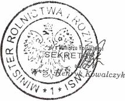
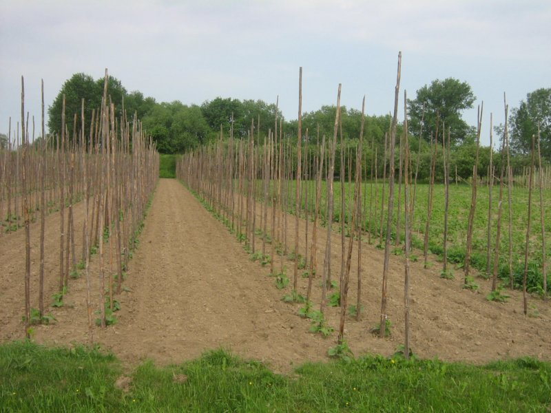
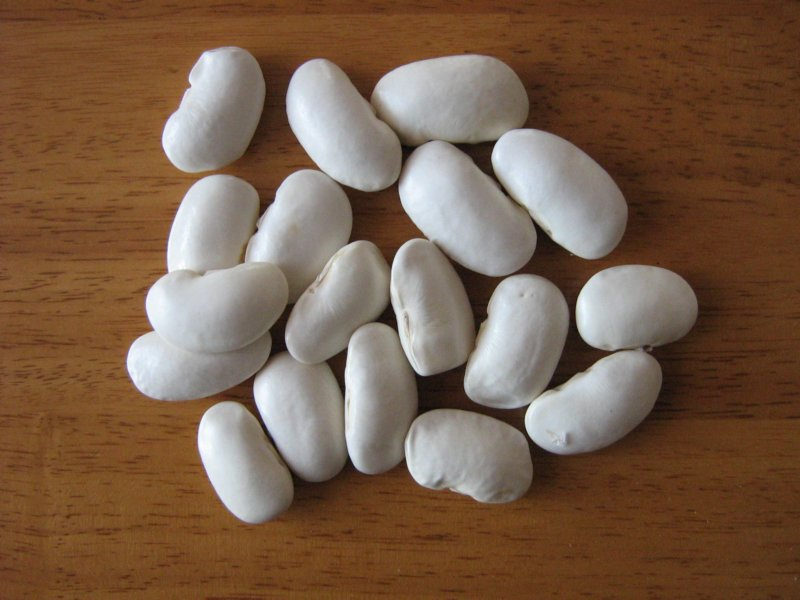
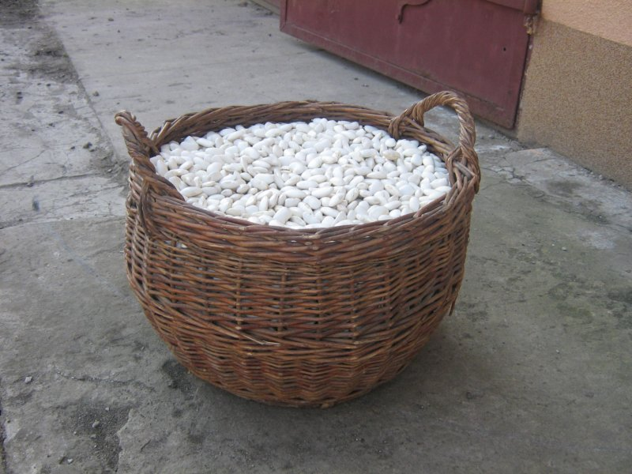
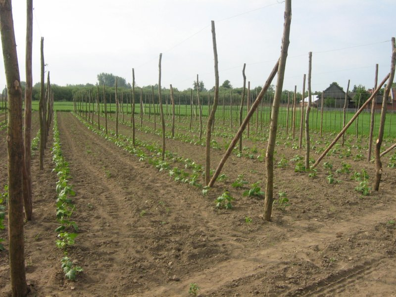
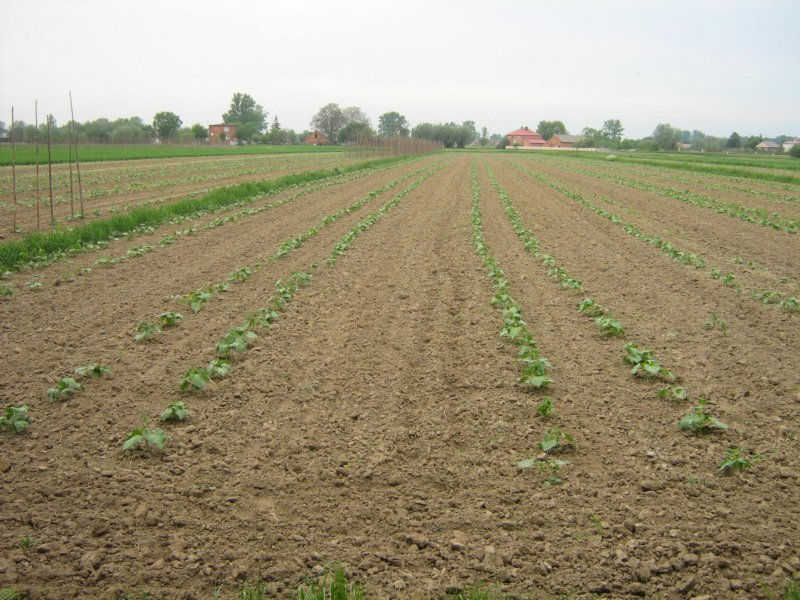
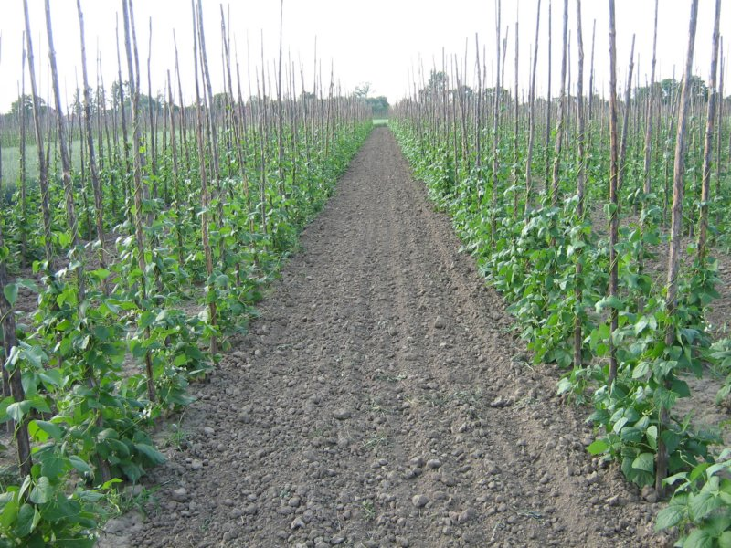
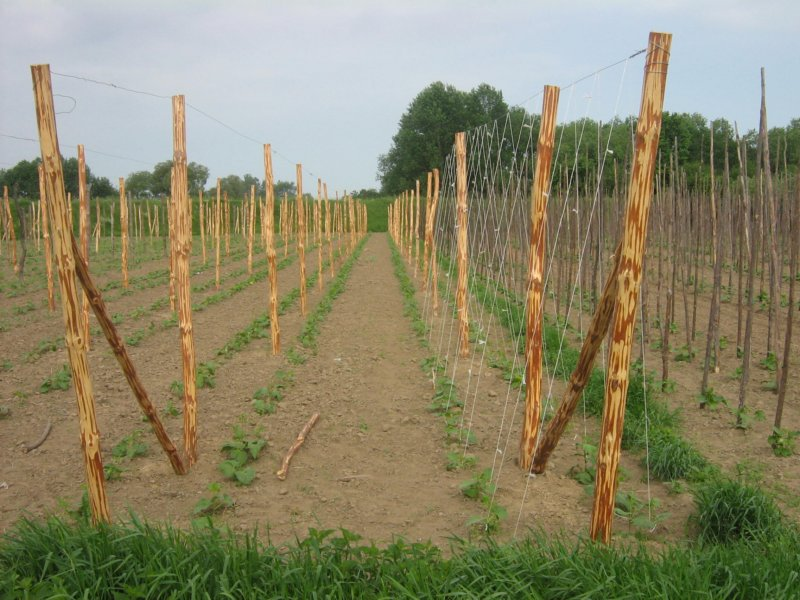